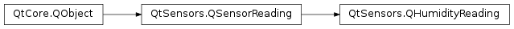

QHumidityReading¶
Synopsis¶
Functions¶
- def
absoluteHumidity() - def
relativeHumidity() - def
setAbsoluteHumidity(value) - def
setRelativeHumidity(percent)
Detailed Description¶
ThePySide2.QtSensors.QHumidityReadingclass holds readings from the humidity sensor.
QHumidityReading Units¶
The humidity sensor returns the relative humidity as a percentage, and absolute humidity in grams per cubic meter (g/m3). Note that some sensors may not support absolute humidity, 0 will be returned in this case.
-
class
PySide2.QtSensors.QHumidityReading(parent)¶ Parameters: parent – PySide2.QtCore.QObject
-
PySide2.QtSensors.QHumidityReading.absoluteHumidity()¶ Return type: PySide2.QtCore.qreal
-
PySide2.QtSensors.QHumidityReading.relativeHumidity()¶ Return type: PySide2.QtCore.qreal
-
PySide2.QtSensors.QHumidityReading.setAbsoluteHumidity(value)¶ Parameters: value – PySide2.QtCore.qrealSets
PySide2.QtSensors.QHumidityReading.absoluteHumidity()tovalue.
-
PySide2.QtSensors.QHumidityReading.setRelativeHumidity(percent)¶ Parameters: percent – PySide2.QtCore.qrealSets
PySide2.QtSensors.QHumidityReading.relativeHumidity()tohumidity.
© 2018 The Qt Company Ltd. Documentation contributions included herein are the copyrights of their respective owners. The documentation provided herein is licensed under the terms of the GNU Free Documentation License version 1.3 as published by the Free Software Foundation. Qt and respective logos are trademarks of The Qt Company Ltd. in Finland and/or other countries worldwide. All other trademarks are property of their respective owners.